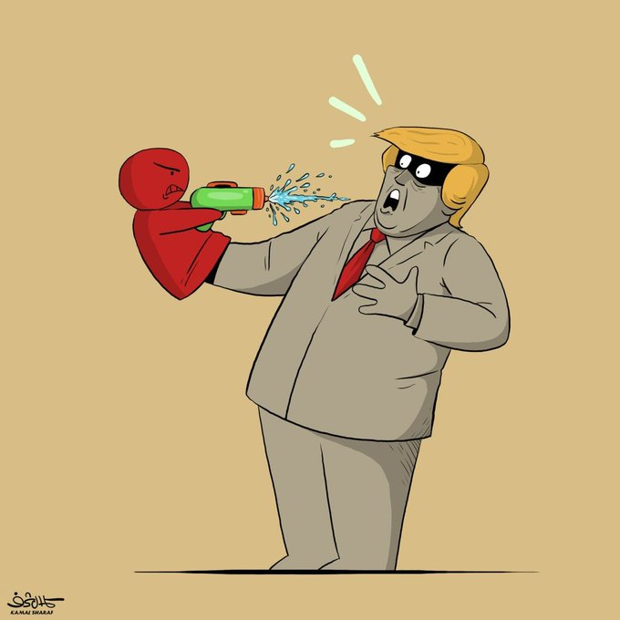
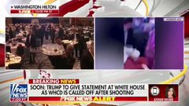

@Tasnimnews_Fa
📝 原文: Sarcastic reaction by Kamal Sharaf, the Yemeni cartoonist, to the shooting incident at the White House correspondents' dinner in Washington in the presence of Trump
🇨🇳 译文: 也门漫画家卡迈勒·沙拉夫对特朗普在华盛顿举行的白宫记者晚宴上发生的枪击事件做出讽刺反应



🕒 2026-04-26T08:06:20+00:00